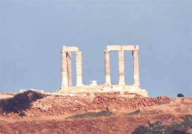
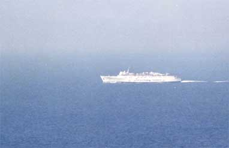

 猛暑のなか朝早くスーニオン岬に出かける事にした。昨晩に知り合った日本人女性二人と一緒に行く事にして、朝にシン タグマ広場で落ち合う。ここで女性が日本語で朝食用のパンを購入してきた。（４章おじさんパン２つ）３人だからタクシーで行っても割安で速いと思いタクシーを捜す。餌食にされるタクシーがやってきた。スーニオン岬に行 きたいが値段は幾らか交渉を始める。車はかなり古く、メーターは無いようであった。往復で幾らに成るか聞き出す。感覚 で距離は５０ｋｍ位である。話しではバスの本数が少なく不便だから往復にした方が良いと言ってきて額は忘れたが妥当な 数字を言ってきたので利用することにした。  １時間くらいで到着したように思う。ここスーニオン岬は本来夕日をバックにすると映える観光スポットである。猛暑の 朝でも地中海を望み気持ちの良いところである。沖には地中海クルージングの船が走っていた。レストランみたいな所に行 ったらバス停留場があり、丁度１時間後にバスが出る事が分かった。遠くでこれを見ていた運転手がしまったという顔をし ていた。早速再度交渉である。バスで帰ればタクシーは半額になる、安くしろと始めた。こればかりは運転手に分が悪い、彼も渋々我々の提示した額で 了解した。額は幾らだったか忘れてしまった。岐路はメーターを止めて帰ることになった、それまでメーターが付いていて 動いている事に気が付かなかった。可哀相な運転手のために女性に一人助手席に座ってもらったら、彼はげんきんで機嫌よ く運転をしていた。途中でメーターを動かし始めたので抗議したら、警察官が居てメーターを動かしていないと検挙される ので動かしたと教えてくれた。 アテネのシンタグマ広場で交渉通りの支払いを行い、日本人女性とも旅行の無事を祈り別れた。 ２００１年１０月１３日 記
|